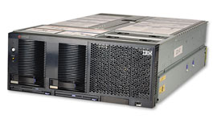
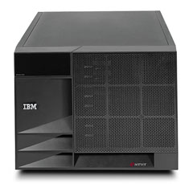
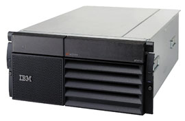
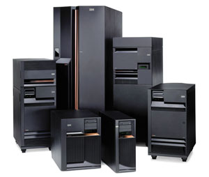
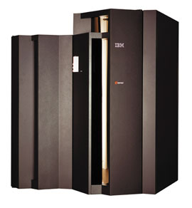

Михаил Воробьев,
специалист по системам хранения IBM компании "Гетнет"
MVorobyev@hetnet.ru
По мере того как расширяется сфера применения электронного бизнеса, увеличивается и потребность в надежной инфраструктуре для основных бизнес-процессов. Большинству предприятий уже сейчас требуется организация доступа к электронной почте и Интернету, распределенная обработка данных, управление сетями, распространение информации, ее защита, реализация хостинга, IP-телефония, системы обмена сообщениями. Решение подобных задач возлагается на серверный парк предприятий.
Классификацию серверов можно проводить по производительности, по назначению, по поддерживаемым программно-аппаратным платформам. Обычно используется и деление по масштабу использования. Деление это условное, поскольку "масштабы" предприятий, отделов и рабочих групп могут весьма существенно различаться. Тем не менее для сервера масштаба предприятия важны показатели вычислительной мощности, емкости подсистем хранения данных, пропускной способности внутренних и внешних шин. К этим серверам предъявляются наибольшие требования по отказоустойчивости и времени восстановления работоспособности после сбоя.
Более важной для принятия решения при строительстве ИС представляется классификация серверов по функциональности. Исходя из распределения по масштабу, трудно судить однозначно, можно ли эффективно решать все ИТ-задачи предприятия, отдела или рабочей группы с помощью сервера соответствующей мощности. Иногда для тысяч пользователей сервер с 4-6 процессорами может оказаться избыточным, а небольшая, но очень активная рабочая группа в состоянии загрузить на 100% все мощности даже более производительной системы.
Исходя из вышесказанного, при классификации целесообразно руководствоваться не соотношением числа пользователей и числа процессоров (емкости дисков и т. п.), а брать за точку отсчета масштабность и сложность решаемых прикладных задач.
Корпорация IBM разделила выпускаемые ею серверы eServer на четыре категории. Серия xSeries - серверы на базе процессоров Intel, не очень производительные, но и недорогие. Серия pSeries - это более мощные серверы, использующие RISC-процессоры с операционной системой AIX (не так давно появилась возможность установить на эту аппаратную платформу и Linux). Серверы iSeries (бывшие AS/400) - это тоже RISC-машины, но в отличие от pSeries они ориентированы на ввод-вывод и в соответствующих задачах превосходят другие системы аналогичного уровня. zSeries - самые высокопроизводительные серверы, построенные на основе технологии z/Architecture и специализированной операционной системы z/OS.
Серверы xSeries
Данная линейка делится на четыре направления: серверы, оптимизированные для использования в стоечном варианте, универсальные серверы, сверхтонкие модульные "серверы-лезвия" (blade servers) и кластеры.
Серверы для установки в стойку
Серверы, оптимизированные для установки в стойку, предназначены для организаций, для которых критична рабочая площадь, например, для Интернет-провайдеров. Серверы занимают в стойке от 1 до 8 монтажных единиц (1-8U).
|  | Сервер xSeries, оптимизированный для установки в стойку.
|
Младшая модель этой разновидности Intel-серверов IBM - eServer xSeries 305, компактный и экономичный однопроцессорный компьютер на базе Pentium 4, предназначенный для развивающихся компаний, ищущих достаточно производительный сервер по приемлемой цене. Малая длина, всего 42,5 см, обеспечивает простоту подключения соединительных кабелей и улучшение условий охлаждения оборудования в стойке.
Для подключения к локальной сети у модели 305 имеется встроенный двухпортовый адаптер Ethernet 10/100/1000. Сервер также оснащен двумя 64-разрядными разъемами PCI-X с частотой шины 100/133 МГц для установки плат расширения. Во всех серверах этого класса IBM использует оперативную память DDR ECC SDRAM PC2100. Дисковая подсистема включает один или два жестких диска с интерфейсом IDE или Ultra 160 SCSI.
Сервер x305 оснащается набором инструментов системного управления - панелью самодиагностики Light Path Diagnostics и пакетом управления IBM Director. Для любого из серверов можно отдельно приобрести адаптер дистанционного управления Remote Supervisor Adapter.
Следующей в линейке идет модель IBM eServer xSeries 335 - двухпроцессорный сервер, по производительности превосходящий 305. В дополнение ко всему, что есть в eServer xSeries 305, модель 335 поддерживает UltraSCSI 320 и дисковые массивы RAID 1. Использование технологии кабельных цепочек IBM C2T Interconnect упрощает инсталляцию и установку, позволяя обойтись меньшим числом кабелей.
Сервер xSeries 345 имеет форм-фактор 2U. Он, как и 335, использует процессоры Intel Xeon и память DDR. Модель оснащается контроллерами Dual Ultra320 SCSI, встроенным двухпортовым адаптером Integrated Dual Gigabit Ethernet и пятью слотами PCI. Сервер 345 предназначен для информационных центров и провайдеров приложений, испытывающих дефицит пространства. Наряду с панелью самодиагностики Light Path Diagnostics и пакетов управления IBM Director 345 содержит еще и средства выявления потенциальных неполадок Predictive Failure Analysis, а также встроенный процессор системного управления Integrated Systems Management Processor. Все эти компоненты, тесно интегрированные друг с другом, обеспечивают прогнозирование и профилактику сбоев, повышая общую надежность системы. Число жестких дисков в данном случае увеличено до шести, таким образом доступное дисковое пространство может достигать 880 Гбайт. Функции Wake On LAN и Preboot eXecution (PXE) увеличивают возможности управления сервером по сети и снижают затраты на установку.
Модель 360 представляет собой четырехпроцессорный сервер - в качестве процессоров используются Intel Xeon MP с тактовой частотой до 1,6 ГГц и объемом кэш-памяти L3 1 Мбайт. В данной модели применена технология IBM Enterprise X-Architecture, дающая возможность без существенных затрат расширять систему по мере роста потребностей. Установив дополнительный модуль IBM RXE-100, содержащий до 12 слотов Active PCI-X, можно значительно расширить функциональность сервера и модернизировать подсистему ввода-вывода. В шине Active PCI-X предусмотрена возможность горячей установки и замены адаптеров. С сервером 360 поставляется большой набор программных инструментов для управления системами и повышения доступности - IBM Remote Supervisor Adapter, IBM Director, Real Time Diagnostics, Process Control и Light Path Diagnostics.
Самый производительный из Intel-серверов IBM - модель 440, настолько выделяющаяся из линейки серверов на базе Intel, что о ней стоит поговорить подробнее. Эта машина построена на базе набора микросхем IBM XA-32, наиболее полно реализует возможности технологии Enterprise X-Architecture на платформе IA-32 и по производительности вполне способна конкурировать с RISC-серверами.
Сервер 440 может иметь до 16 процессоров в рамках архитектуры SMP. Он обеспечивает гибкость работы с логическими разделами, а также с подключаемыми внешними устройствами. В системе впервые реализован кэш-ускоритель 4-го уровня XceL4, который повышает общую производительность системы на 20%. При 16-процессорной конфигурации SMP можно использовать по 32 Мбайт кэш-памяти 4-го уровня на каждые 4 процессора - в сумме это дает до 128 Мбайт.
Отметим, что xSeries 440 - это первый сервер IBM на платформе Intel, построенный по принципу компоновочных блоков, приобретаемых по мере необходимости. Заказчик может изначально приобрести нужный ему на данный момент уровень производительности и объем ресурсов ввода-вывода, а затем, по мере увеличения потребностей, докупить недостающее. Эту технологию масштабирования IBM назвала XpandOnDemand (т. е. расширение по мере необходимости). В дальнейшем ее планируется использовать во всех серверах.
Универсальные серверы
Модельный ряд универсальных серверов похож на модельный ряд стоечных серверов, лишь с тем существенным отличием, что большинство универсальных серверов выполнены в настольном варианте (Tower). Начальный сервер этой линейки - модель xSeries 205. Это простой однопроцессорный вариант на базе Pentium 4. Дисковая подсистема может включать до четырех жестких дисков IDE или SCSI емкостью до 440 Гбайт. Модель 205, отличающаяся небольшой совокупной стоимостью владения, имеет все возможности, необходимые для полноценного сервера.
|  | Универсальный сервер xSeries.
|
Модель xSeries 225 - это двухпроцессорный сервер на базе Xeon DP. Здесь предусмотрена установка до 6 SCSI-дисков с горячей заменой. Возможна установка адаптера дистанционного управления Remote Supervisor Adapter и других плат расширения.
Модель xSeries 235 - также двухпроцессорный сервер. В дополнение ко всему, что есть в двух предыдущих моделях, 235 имеет встроенный адаптер RAID 1 и память Chipkill, поддерживает технологию Active PCI-X, а также возможность горячей замены вентиляторов и блоков питания. Разработанная IBM технология Chipkill позволяет определять ошибки в нескольких битах и устранять большинство из них без прерывания работы приложений. Если частота появления ошибок превосходит установленное пороговое значение, в системе автоматически начинают выполняться процессы технического обслуживания. Исследования показывают, что в системах IBM с технологией Chipkill число сбоев по причине ошибок памяти уменьшается в 100 раз.
Завершает линейку универсальных серверов модель xSeries 255, которая выпускается как в настольном варианте, так и в стоечном (высота 7U). Четыре процессора Xeon, оперативная память DDR ECC Chipkill объемом до 12 Гбайт, технология Active Memory и поддержка до 12 жестких дисков с возможностью горячей замены - все это делает х255 весьма привлекательным выбором.
Модульные серверы
Следующее решение класса xSeries, BladeCenter, представляет собой набор "серверов-лезвий", каждый из которых собран на одной плате. В шасси BladeCenter размером 7U можно установить до 14 "лезвий", что позволяет уместить в одной стойке до 84 двухпроцессорных серверных модулей. Модульные серверы можно устанавливать в шасси, наращивая по мере необходимости корпоративную серверную базу. Общая соединительная плата (midplane) обеспечивает отказоустойчивое соединение сервера со всеми модульными компонентами.
Новая уникальная технология дозированного направленного охлаждения Calibrated Vectored Cooling помогает защитить все критически важные компоненты системы и повышает надежность работы систем в соответствии с концепцией постоянной готовности OnForever. Для системного администратора предусмотрена единая консоль управления всеми компонентами шасси и модульными серверами. Для коммутации серверов, модулей управления и локальной сети дополнительно устанавливаются модульные Ethernet-коммутаторы, для подключения к сети Fibre Channel существуют модульные FC-коммутаторы.
Сам модульный сервер представляет собой компьютер на базе одного или двух процессоров Xeon. Оперативная память PC2100 ECC DDR Chipkill SDRAM имеет объем от 512 Мбайт до 8 Гбайт. Дисковое пространство включает до двух жестких дисков с возможностью горячей замены. Диски с интерфейсом IDE могут иметь емкость до 80 Гбайт, диски SCSI U160 или SCSI U320 - до 146,8 Гбайт. Для подключения к Ethernet-сети служат два адаптера Gigabit Ethernet с поддержкой функций перераспределения нагрузки и восстановления после сбоев.
Решение на базе BladeCenter предназначено для территориальной консолидации серверов и снижения затрат на площадь. В комплекте с BladeCenter предлагаются средства дистанционного развертывания IBM Remote Deployment Manager, панель самодиагностики Light Path Diagnostics (набор ЖК-индикаторов, позволяющих быстро локализовать возникшую проблему) и инструмент выявления потенциальных неполадок Predictive Failure Analysis (PFA), а также базовый комплект системного управления IBM Director.
Кластеры
Кластеры IBM (IBM Cluster 1350) на базе процессоров Intel Xeon DP строятся из серверов x335 и x345. Внутрикластерные соединения используют технологию Ethernet или высокоскоростные сети Myrinet 2000.
IBM Cluster 1350 имеет четыре типовые конфигурации. Кластер начального уровня состоит из восьми узлов на базе процессоров с тактовой частотой 2 ГГц, оперативной памятью 512 Мбайт и сетью внутрикластерного взаимодействия, построенной на базе Ethernet 10/100. Промежуточный уровень предполагает наличие 32 узлов с процессорами 2,4 ГГц и оперативной памятью 1 Гбайт. Третьему уровню соответствует "быстрый" кластер, содержащий уже 64 узла с теми же параметрами. Для самых требовательных приложений предусмотрен кластер высшего уровня, в котором объединяются 128 машин.
MyrinetСеть Myrinet разработана компанией Myricom как средство коммутации кластеров, построенных на базе рабочих станций, персональных компьютеров и серверов. Поскольку обычная сеть на базе Ethernet не обеспечивает требований к производительности и функциональности, предъявляемых к кластерным системам, Myricom предложила альтернативную технологию, использующую полнодуплексное соединение с пропускной способностью 2+2 Гбит/с. Контроль потока данных (Flow Control), контроль ошибок (Error Control) и отслеживание кадровой последовательности (heartbeat continuity monitoring) осуществляется здесь для каждого соединения. Использование специальных коммутаторов позволяет строить вычислительную сеть, состоящую из десятков тысяч машин. При этом обеспечивается избыточность, повышающая отказоустойчивость сети. Myrinet с 1998 г. стала в США национальным стандартом (ANSI/VITA 26-1998).
|
Серверы pSeries
В эту категорию вошли Unix-серверы на базе процессоров Power, производимых IBM. Модель начального уровня pSeries 610, отличающаяся невысокой ценой, представлена в двух вариантах - настольном и стоечном. Каждый сервер поставляется с одним или двумя процессорами Power3-II, работающими с тактовой частотой 333, 375 или 450 МГц и использующими медные межсоединения. Оперативная память имеет объем от 512 Мбайт до 8 Гбайт. Два встроенных контроллера 10/100 Ethernet обеспечивают подключение к локальной сети, кроме того, имеются три последовательных порта и один параллельный. В каждом сервере есть встроенные внутренние и внешние контроллеры Ultra3 SCSI для подключения жестких дисков и других периферийных устройств.
|  | Сервер pSeries на базе процессоров Power.
|
Системы pSeries отличаются внушительными возможностями расширения. Наряду с внутренним дисковым отсеком имеется шесть дисковых отсеков для горячей замены с простым доступом с передней панели. В эти отсеки можно устанавливать жесткие диски емкостью 18,2; 36,4; 73,4 или 146,8 Гбайт. Есть также два дополнительных отсека для установки ленточных или дисковых накопителей. В одном из них может находиться только дисковод CD-ROM или DVD-RAM. В другой отсек можно устанавливать CD-ROM, DVD-RAM, ленточный накопитель или еще один жесткий диск. Максимальный объем внутренней дисковой памяти составляет 587,2 Гбайт. Пять разъемов PCI допускают установку 64-разрядных адаптеров, все разъемы PCI совместимы с 32-разрядными платами.
Модель pSeries 630 также может быть выполнена в настольном и стоечном варианте (6E4 и 6C4). В этих серверах используются новейшие процессоры Power4 (Regatta). Предусмотрена установка одного, двух или четырех процессоров. В четырехпроцессорных системах возможна замена неисправного процессора без остановки системы.
Оба варианта сервера имеют шесть отсеков для дисков, из них четыре свободны и обеспечивают горячую замену. Таким образом суммарная емкость внутренних дисков может достигать 587,2 Гбайт. Внешние дисковые системы SCSI, SSA или Fibre Channel подключаются через соответствующие адаптеры с помощью четырех слотов Active PCI.
В декабре 2002 г. для серверов p630 был выпущен блок расширения 7311-D20. Это устройство имеет семь слотов Active PCI-X (64 разряда и частота 133 ), 12 отсеков для дисков горячей замены (2х6). Диски Ultra3 SCSI со скоростью вращения 10 тыс. об./мин могут иметь емкость 18, 36, 73 или 147 Гбайт. Обеспечивается поддержка всех адаптеров pSeries 630, за исключением #8397 (SP Switch2PCI Attachment Adapter), #2741 (FDDI LP/Fiber SAS Adapter) и #2742 (FDDI LP/Fiber DAS Adapter).
В отличие от других серверов подобного уровня модель 630 содержит сервисный процессор, благодаря чему можно воспользоваться преимуществами расширенной диагностики для оповещения сервисных инженеров о неполадках в аппаратном обеспечении. Функция сбора данных по первой неисправности FFDC (First Failure Data Capture) идентифицирует и заносит в журнал данные о причине сбоев в режиме реального времени и помогает определить элементы системы, которые необходимо заменить для устранения неполадки.
В pSeries 630 используется технология памяти ECC, позволяющая повысить надежность и устранить ошибки в работе как кэш-памяти L2 и L3, так и основной системной памяти. Технология ECC была разработана для определения одноразрядных и двухразрядных ошибок и исправления всех одноразрядных ошибок. Для защиты оперативной памяти используется технология Chipkill.
Модель pSeries 630 6E4 при наличии графического адаптера Power GTX4500P или Power GTX6500P можно использовать в качестве высокопроизводительной графической станции, к примеру, для решения задач автоматизированного проектирования в среде CATIA.
Сервер pSeries 650 предназначен для монтирования в стандартную стойку. Система построена на основе микропроцессора Power4+, представляющего собой конструктивное усовершенствование кристалла Power4. Эти микросхемы, выполненные по технологии "кремний на изоляторе" с медными межсоединениями полупроводников, сегодня относятся к числу самых быстрых 64-разрядных кристаллов.
Технология многокристальных модулей MCM (Multi-Chip Module) Power4+ - воплощение идеи "SMP на кристалле" для Unix-серверов. Каждый модуль содержит два процессора и 1,5 Мбайт общей кэш-памяти второго уровня (L2). В этом же модуле находится общая кэш-память третьего уровня (L3) объемом 32 Мбайт для процессорных плат 1,45 ГГц (для процессорных плат 1,2 ГГц объем памяти равен 8 Мбайт). Кэш-память L3, которая помогает повысить эффективность передачи информации между оперативной памятью и прикладными программами, имеет пропускную способность до 15,4 Гбайт/с на процессорную плату (в восьмипроцессорной системе суммарная пропускная способность составляет 61,9 Гбайт/с).
Система pSeries 650 спроектирована так, чтобы в полной мере использовать быстродействие процессоров Power4+. Максимальный объем ОЗУ составляет 64 Гбайт, а совокупная пропускная способность памяти достигает 25,6 Гбайт/с в восьмипроцессорной конфигурации; при этом совокупная пропускная способность системы ввода-вывода равна 10 Гбайт/с. В результате получается удачная комбинация системной архитектуры, скорости и вычислительной мощности, которая обеспечивает эффективный и экономичный совместный доступ к данным при высокой скорости выполнения приложений. При необходимости к серверу можно подключить дополнительно до восьми блоков ввода-вывода 7311-D10. Суммарное число разъемов PCI можно довести до 55. Сервер поддерживает операционные системы AIX 5.1, 5.2, Red Hat Linux 7.1 for pSeries (64 bit) и SuSE Linux Enterprise Server 7 for pSeries.
Системы pSeries 650 поддерживают логические разделы LPAR и динамические DLPAR, благодаря чему систему можно разделить на несколько независимых "виртуальных" серверов, или разделов, каждый из которых работает под управлением независимой копии операционной системы AIX 5L. Специализированная рабочая станция Hardware Management Console (HMC) для pSeries служит для управления распределением процессоров, памяти и ресурсов ввода-вывода между разделами. Для обеспечения практически абсолютного уровня доступности можно объединить от двух до 32 серверов pSeries 650 в кластер под управлением программного пакета IBM HACMP (High Availability Cluster Multiprocessing).
Сервер pSeries 655 - это четырех- или восьмипроцессорный компьютер, предназначенный для монтирования в стойку. Главное предназначение 655 - создание кластерных конфигураций с высокой плотностью вычислительной мощности. В стандартной стойке можно разместить до 16 серверов со 128 процессорами.
В сервере используются четырехпроцессорные модули MCM Power4 1,3 ГГц или восьмипроцессорные 1,1 ГГц MCM с кэш-памятью L3 128 Mбайт. Емкость оперативной памяти составляет от 4 до 32 Гбайт. Доступны три слота PCI-X и два диска Ultra3 SCSI. К серверу можно подключить один блок ввода-вывода 7040-61D (до 20 слотов PCI и до 16 дисков Ultra3 SCSI с возможностью горячей замены). Каждый сервер может быть разделен на два логических раздела. В качестве ОС обычно используется AIX 5L для Power V5.1.
Серверы pSeries 670 и 690, построенные на основе микропроцессоров Power4, очень близки по конструкции. Технология MCM, испытанная на мэйнфреймах IBM zSeries, позволяет разместить в одном корпусе до восьми процессоров Power4 и 128 Мбайт разделяемой кэш-памяти третьего уровня (L3). В pSeries 670 можно установить два таких модуля, в pSeries 690 - четыре (поскольку оперативная память конструктивно связана с процессорным модулем, в сервер 690 ее устанавливается в два раза больше). Пропускная способность шины памяти 690 составляет 200 Гбайт/с, что также в два раза больше, чем у 670.
Старшие модели pSeries построены по модульному принципу, это позволяет добавлять блоки ввода-вывода по мере роста требований к числу разъемов PCI и емкости внутренних дисков. Каждый блок ввода-вывода 7040-6D1 может содержать до 20 разъемов PCI и до 16 дисков горячей замены. Сервер 670 позволяет подключить три подобных блока, 690 - до восьми. Соединение с процессорным блоком осуществляется с помощью кабелей дистанционного ввода-вывода (RIO). Все разъемы PCI в данном случае предусматривают замену "вслепую" - они позволяют устанавливать и удалять платы без перемещения секции в сервисное положение и без перезагрузки системы. Предусмотрена проверка четности на шине PCI.
Старшие модели pSeries обладают широкими возможностями предотвращения сбоев и расширенной диагностики. Система аппаратного протоколирования данных первого отказа (First Failure Data Capture) автоматически записывает данные в момент отказа - регистр выделения неисправности сохраняет "отпечаток" отказа. Проверяется более 5000 контрольных точек, включая питание, охлаждение и систему ввода-вывода. На уровне процессора контролируется код ECC с возможностью динамического отключения отказавшей части процессорного модуля, в том числе кэш-памяти. Оперативная память также использует механизм ECC, система Chipkill в побитовом режиме управляет избыточными микросхемами для продолжения работы в случае появления ошибок. Линии RIO дублируются и проверяются с помощью избыточного циклического кода; дублируются также системы питания и охлаждения сервера. Возможно динамическое отключение шины PCI. Кроме того, впервые в отрасли применено восстановление шины PCI после ошибок контроля четности.
Все необходимые функции установки, администрирования и использования сервера в целом и динамических логических разделов осуществляются с помощью аппаратного пульта управления HMC (Hardware Management Console). Это значительно упрощает создание и сохранение конфигураций LPAR с указанием ресурсов (процессоры, память и подсистемы ввода-вывода) и прочие операции по управлению разделами и серверами.
Серверы 670 и 690 можно заказать в составе кластера eServer Cluster, сконфигурированного и протестированного прямо на заводе. Представители IBM подчеркивают, что в отличие от обычной ситуации, когда кластер состоит из узлов с относительно небольшой вычислительной мощностью, тридцать две системы 690 или 670 могут более эффективно решить задачи консолидации крупного серверного парка.
Серверы pSeries 690 и 670 - самые мощные Unix-серверы, доступные в настоящее время. Считается, что они по меньшей мере на одно поколение опережают конкурирующие системы по показателям производительности и автоматического самоуправления. Эти системы отличаются повышенной гибкостью, богатыми возможностями для наращивания производительности и взаимодействия с другими системами. Благодаря применению технологии LPAR, которая ранее использовалась только в мэйнфреймах, эти системы позволяют без труда осуществить объединение рабочей нагрузки и организовать параллельное выполнение Unix-приложений в разных разделах. Серверы pSeries обеспечивают практически линейную расширяемость, необходимую для ресурсоемких вычислительных задач.
Серверы iSeries
Серверы iSeries спроектированы в соответствии с инициативой IBM по созданию самоуправляющихся и самовосстанавливающихся вычислительных систем, требующих минимального вмешательства со стороны системного администратора. В результате они обладают высокой надежностью и доступностью, хорошими сервисными характеристиками, минимальным временем незапланированного простоя и низкой общей стоимостью владения.
|  | Семейство серверов iSeries.
|
IBM предлагает три варианта поставки модели iSeries 800, отличающихся вычислительной мощностью и комплектом ПО. Можно выбрать сервер, возможности которого будут расти вместе с требованиями бизнеса компании. В iSeries применены процессоры, выполненные по технологии "кремний на изоляторе". Объем оперативной памяти может достигать 8 Гбайт, объем дискового пространства - 4 Tбайт. Система iSeries 800 позиционируется как решение для малых предприятий, которым необходим недорогой и простой в использовании сервер.
Серверы iSeries 800 Value Edition и Standard Edition - младшие модели семейства, оснащенные одним процессором Sstar. Эти системы предназначены для заказчиков, которые до сих пор работают с "классическими" приложениями AS/400 и планируют модификацию своего программного и аппаратного обеспечения. В комплект Standard Edition включено ПО WebSphere Express, что позволяет перейти к электронному бизнесу на базе сервера приложений. Наиболее мощная модель, Advanced Edition, ориентирована на задачи консолидации приложений разных платформ с большим запасом по производительности.
Модель iSeries 810 комплектуется тремя видами процессорных плат с различной вычислительной мощностью. Наиболее мощный сервер представляет собой двухпроцессорную систему на базе микросхемы Sstar с тактовой частотой 750 МГц. В сервер можно установить до 16 Гбайт оперативной памяти и до 198 жестких дисков суммарной емкостью 14 Tбайт. Модель 810 подойдет малым и средним предприятиям, которым требуется не только высокая производительность процессора, но и возможность консолидации серверного парка на платформе iSeries.
Возможны два варианта поставки сервера - Standard и Enterprise. Система iSeries 810 Enterprise Edition отличается комплектом ПО (WebSphere Application Server Express, лицензии на использование Lotus Sametime и QuickPlace, Tivoli for IBM eServer iSeries Enterprise Package) и отсутствием ограничения на использование процессорной мощности в интерактивных задачах.
Модель iSeries 825 построена на базе процессоров Power4, число которых может варьироваться от трех до шести. Объем оперативной памяти составляет от 2 до 48 Гбайт. Поддерживается до 825 жестких дисков общей емкостью порядка 58 Тбайт, а также до 206 PCI-адаптеров и до 96 портов LAN, что обеспечивает самые широкие возможности масштабирования.
Архитектура ввода-вывода iSeries позволяет устанавливать высокоскоростные (до 1 Гбит/с) защищенные каналы, связывающие между собой отдельные серверы. Все, что передается по этим каналам, находится под контролем iSeries (технологии локальных сетей этого не позволяют). В результате надежность и средняя пропускная способность у таких каналов (не говоря уже о безопасности) гораздо выше, чем у Gigabit Ethernet.
Исполнение кода Linux на iSeries одновременно с бизнес-приложениями AS/400 стало возможно благодаря логическим разделам, средствам динамического перераспределения ресурсов и виртуализации хранения данных. Все эти технологии применялись ранее только в мэйнфреймах IBM. С появлением процессоров Power4 и выходом 64-разрядных версий Linux возможности операционной системы OS/400 V5.2 существенно возросли (можно использовать до 10 разделов Linux на один процессор). Надежность аппаратного обеспечения, производительность Power4 и особенности системы ввода-вывода делают Linux на платформе iSeries операционной системой корпоративного уровня.
Модели iSeries 870 и 890 основаны на тех же технологиях, что и модель 825. Основные их отличия - максимальное число процессоров, объем оперативной памяти и возможности масштабирования. Для iSeries 870 максимальное число процессоров достигает 16, а объем оперативной памяти - 128 Гбайт. У модели 890 максимальное число процессоров - 32, объем оперативной памяти - 256 Гбайт (производительность 37 400 CPW). Обе модели поддерживают до 2047 жестких дисков, обеспечивающих дисковое пространство до 144 Тбайт. Для плат расширения имеется 516 PCI-слотов, а для подключения к LAN можно использовать до 128 портов.
Серверы zSeries
Компьютеры zSeries - это модернизированные версии мэйнфрейма S/390, предназначенные для исполнения приложений электронного бизнеса. В основу zSeries легла архитектура z/Architecture (по одной из версий "z" означает "zero down time" - нулевое время простоя системы, по другой - выход в третье измерение). Главное новшество этих серверов - 64-разрядная адресация памяти. Система zSeries может включать до 640 процессоров (512 процессоров для задач пользователей и 128 для поддержки ключевых системных функций). Предлагается 25 различных моделей этой архитектуры. Компьютеры могут работать под управлением новых 64-разрядных версий операционных систем z/OS, z/VM, Linux for zSeries, а также старых систем OS/390, VM/ESA, VSE/ ESA, TPF и Linux for S/390.
|  | Cервер zSeries - инструмент для решения задач любой сложности.
|
Возможность 64-разрядной адресации в zSeries 900 устраняет узкие места, связанные с недостатком адресуемой памяти. Интеллектуальный диспетчер ресурсов (Intelligent Resource Director, IRD) позволяет серверам 900 автоматически перенаправлять ресурсы приоритетным задачам. IRD объединяет достоинства трех технологий - администратора нагрузки Workload Manager, логического создания разделов Logical Partitioning и параллельной кластеризации Parallel Sysplex.
Компьютеры zSeries в сочетании со специализированной операционной системой z/OS представляют собой очень мощный инструмент для решения современных задач практически любой сложности.
|
"Информационные системы предприятий - это не отдельные части. Это часть новой, недавно возникшей глобальной инфраструктуры, которая стала возможной благодаря появлению Интернета и которая не может быть собственностью отдельного предприятия. Это коллективная собственность, к которой имеет доступ и на которую опирается любой бизнес, государственное учреждение, школа, больница и все вокруг. В этом смысле компьютерная инфраструктура быстро уподобляется любой другой, существование которой в нашем мире мы считаем само собой разумеющимся - телефонной сети, транспортным магистралям, энергосистеме. Она пришла к нам надолго". Лу Герстнер, IBM
|